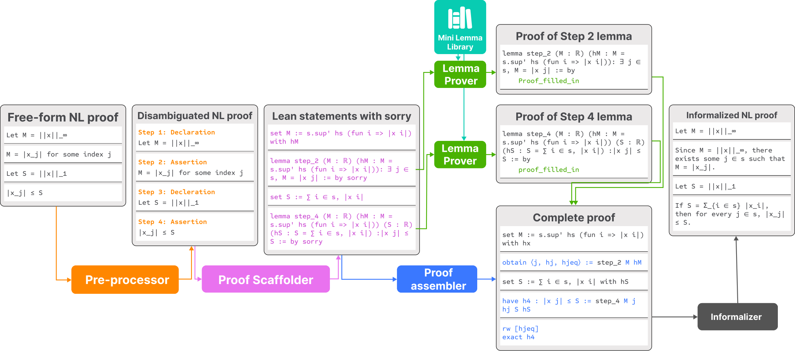
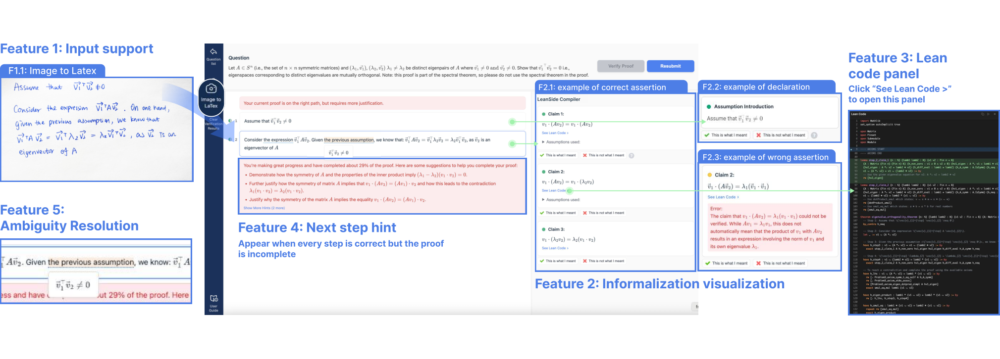
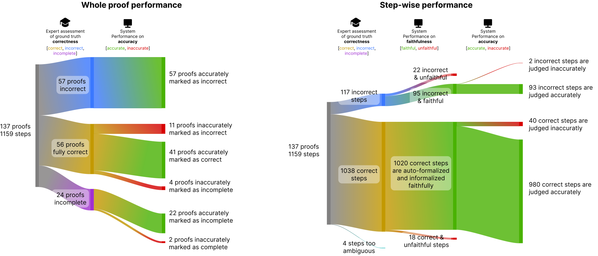
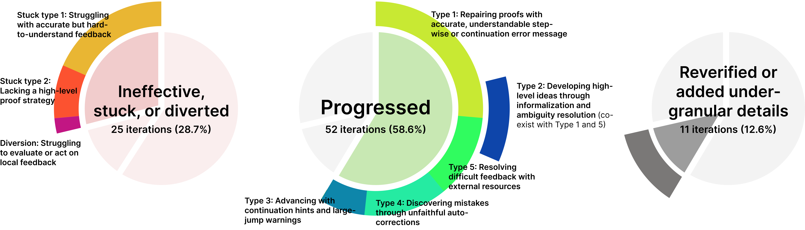

LeanSide auto-formalizes students' natural-language proofs into Lean with Mathlib and a lemma library, compiles them, and informalizes the verifier output into feedback.
Abstract
Large language models are increasingly used as collaborators on deductive-reasoning tasks, but their outputs can hallucinate or pull users away from intended reasoning. Formal proof assistants provide machine-checked verification, but have a steep learning curve and require more granular reasoning than human written proofs. We explore an interface that combines these strengths, allowing users to write and revise free-form natural-language proofs while a verified backend checks their reasoning and returns feedback at the user's granularity. We study this interface in the context of undergraduate mathematics education by developing LeanSide, a formally verified co-reasoning system, which auto-formalizes student reasoning into Lean and informalizes verifier output into understandable feedback. We conducted user studies through classroom deployment and analyzed which system properties helped students make progress and which caused them to get stuck. We use these findings to derive design implications for using a formally verified backend in human-AI co-reasoning systems.
Problem
LLM collaborators on proofs can hallucinate, while formal proof assistants are hard for novices to use and demand more granular reasoning than human-written proofs. The goal is an interface where students write free-form natural-language proofs and get machine-checked feedback at their own granularity.
Approach
LeanSide uses LLM-based modules: a natural-language pre-processor (with OCR for handwriting), a proof scaffolder, and a prover. The prover has a lemma prover backed by a mini lemma library and a proof assembler. Together they auto-formalize each student step faithfully into Lean and compile it. An informalizer turns the generated Lean code and compiler errors back into natural-language feedback. The system was deployed over 13 weeks in an undergraduate linear algebra course and evaluated through one-on-one user studies and expert review.

Figure 4. This figure shows the system pipeline. Student input (left) is auto-formalized into Lean through the pre-processor, proof scaffolder and prover, which includes the lemma prover and proof assembler. The generated Lean code and error messages are then informalized back into natural language. The mini-lemma library supports the lemma prover.

Figure 3. The User Interface. Students use the system by uploading handwritten proofs, or typing in. In this snapshot, a student has already uploaded an image of their proof and completed the verification process. The resulting feedback is displayed.
Results
Across 137 proofs and 1,159 expert-judged steps, 2% of correct steps and 18% of incorrect steps were formalized unfaithfully. The system had a low false-positive rate on flawed proofs but flagged 20% of fully correct proofs as erroneous. Of 87 coded revision iterations, 58% led to progress, and students' judgments of feedback faithfulness and accuracy largely agreed with the experts'.

Figure 6. This figure shows the system’s faithfulness and accuracy performance: the left side shows whole-proof performance, and the right side shows step-level performance. We use correct and incorrect for expert-assessed ground truth, accurate and inaccurate for whether the system’s judgment matches that ground truth, and faithful and unfaithful for whether auto-formalization preserves the stude

Figure 7. Distribution of coded revision outcomes. Most iterations led to progress (52 iterations, 58.6%), while 25 iterations (28.7%) were not useful, involved getting stuck, or diverted students from productive proof paths, and 11 iterations (12.6%) involved reverifying or adding under-granular details. The labels show the progress and breakdown types analyzed in this section.